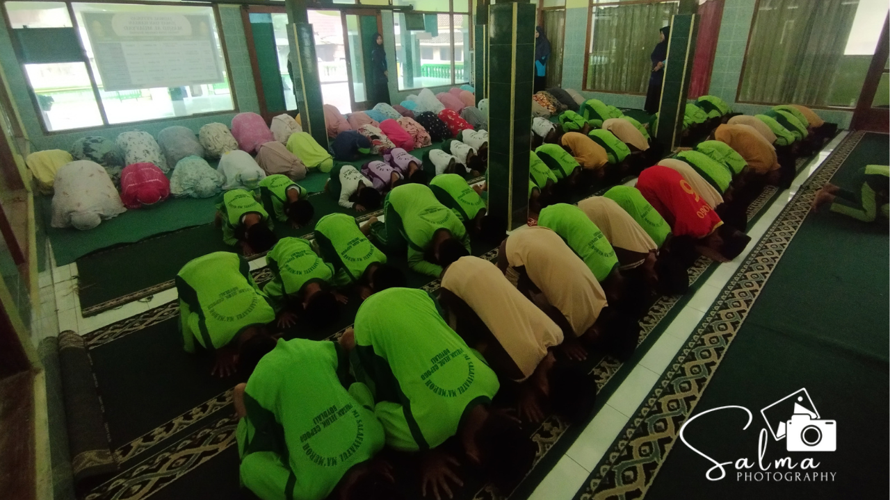

Hari Jumat, 11 September 2026, MI Salafiyatul Ma'muroh mengadakan kegiatan tahsinus sholat yang menjadi awal dari rangkaian program pembinaan ibadah secara berkala. Kegiatan ini dijadwalkan akan rutin dilaksanakan setiap Jumat Legi untuk seluruh warga madrasah.
Pelaksanaan tahsinus sholat ini bertujuan untuk memperbaiki, menyempurnakan, serta meningkatkan kualitas bacaan dan gerakan sholat sesuai dengan tuntunan yang benar. Melalui bimbingan yang terarah, para peserta diajak untuk lebih memahami setiap rukun dan syarat sah sholat secara mendalam.
Pihak madrasah menyampaikan bahwa ibadah sholat merupakan tiang agama sekaligus fondasi utama dalam membentuk karakter peserta didik. Dengan adanya agenda rutin setiap Jumat Legi ini, diharapkan kualitas ibadah harian siswa dapat terus dipantau, dievaluasi, dan ditingkatkan dari waktu ke waktu.
Melalui program pembiasaan ini, MI Salafiyatul Ma'muroh terus berupaya menanamkan nilai-nilai keislaman yang kuat. Harapannya, para siswa tidak hanya cerdas secara akademik, tetapi juga memiliki kedisiplinan spiritual dan kualitas ibadah yang kokoh dalam kehidupan sehari-hari.
← Kembali ke Beranda